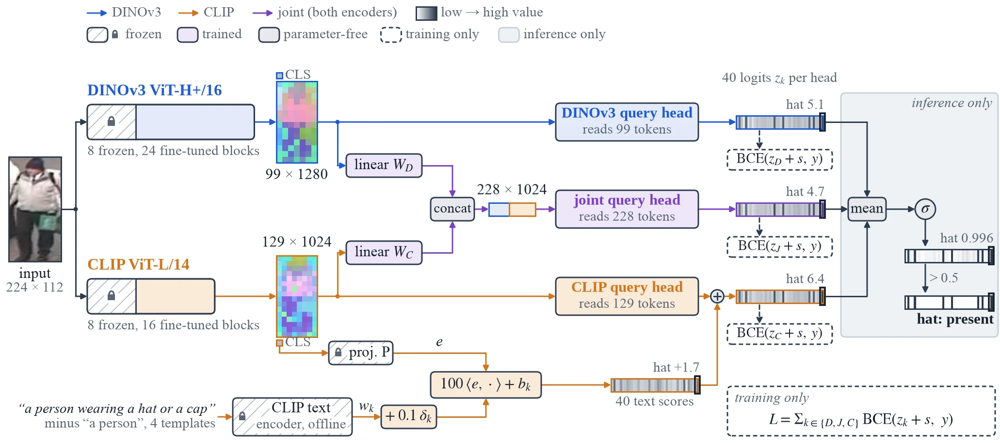

01
WACV 2027 Workshop (In Review)
UniQuery: Cross-Domain Pedestrian Attribute Recognition
Co-adapts self-supervised DINOv3 (ViT-H+/16) and vision-language CLIP (ViT-L/14) with an attribute-specific joint query head. Cross-attention queries dynamically route between visual and text-visual token spaces, outperforming static ensembles across surveillance cameras.

Click to expand (HD)